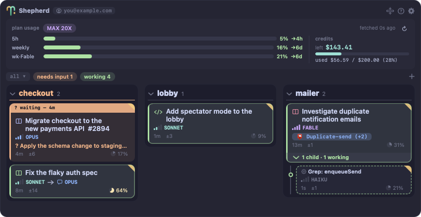
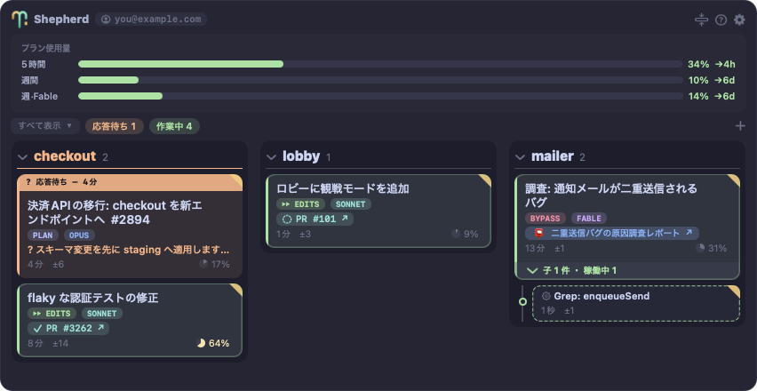

Watch your flock, not your terminals.
ターミナルではなく、群れを見る。
Shepherd is a floating, always-on-top macOS HUD that watches every Claude Code session on your machine — zellij panes, VS Code terminals, bare terminals, background workers. The moment an agent needs you, you know. Zero config, no hooks.
Shepherd は、このマシンで動くすべての Claude Code セッション — zellij ペイン・VS Code のターミナル・ 素のターミナル・バックグラウンドワーカー — を横断監視する、常時最前面のフローティング macOS HUD です。 エージェントがあなたを必要とした瞬間に気づけます。設定ゼロ・フック不要。
Install in 30 seconds30秒でインストール Source on GitHubGitHub でソースを見る


The HUD, one card per session: a blocked agent surfaces its question in orange; working cards carry permission-mode and model chips, elapsed time, changed files, PR/CI and Artifact badges, and a context-window gauge; a subagent nests under its parent. The UI follows your system language (Japanese and English).
HUD は1セッション=1カード。応答待ちのエージェントは質問をオレンジで掲げ、作業中カードには 権限モード・モデルチップ・経過時間・変更ファイル数・PR/CI と Artifact のバッジ・コンテキスト ゲージが載ります。サブエージェントは親の下にネストします。UI はシステム言語に追従（日英対応）。
What it does
できること
- One card per session, sorted by urgency. Agents waiting on you rise to the top in orange, with the question they're asking on the card. Reading the board →
- Act without switching windows. Reply to a blocked agent inline, click a card to land in its pane, drop files onto a card, capture a screen region and send it. Actions →
- Family trees, not a flat list. Subagents and child sessions nest under their parent; finished background records fold into an archive lane.
- Cost & capacity at a glance. Model chip and context gauge on every card, plan-usage bars for your 5-hour and weekly windows in the header.
- Deliverables arrive as links. One unified PR + CI badge, plus every Artifact an agent publishes — reports and design docs land on the card as stable URLs, not scrollback.
- Spawn parallel work safely. The ＋ button creates an isolated git worktree and launches a fresh Claude session in it.
- Optional Stream Deck mirror. A physical status panel — repo columns on keys, blocked sessions blink, press to jump. Stream Deck →
- 1セッション=1カード、緊急度順。応答待ちのエージェントはオレンジで最上部に浮かび、聞きたい質問がカードに載ります。盤面の読み方 →
- ウィンドウを切り替えずに操作。応答待ちへのインライン回答、クリックでそのペインへジャンプ、カードへのファイルドロップ、画面範囲を撮影して送信。操作 →
- フラットな一覧ではなく家系図。サブエージェントと子セッションは親の下にネストし、終了したバックグラウンド記録はアーカイブレーンに畳まれます。
- コストと容量がひと目で。全カードにモデルチップとコンテキストゲージ、ヘッダーには5時間/週間のプラン使用量バー。
- 成果物はリンクで届く。PR と CI は統合バッジ1つに、エージェントが公開した Artifact はすべてカード上のリンクに — レポートや設計書はスクロールバックではなく安定した URL で受け取れます。
- 並列作業を安全に開始。＋ボタンが隔離された git worktree を作り、そこで新しい Claude セッションを起動します。
- Stream Deck ミラー（任意）。物理ステータスパネル — キーにリポジトリ列、応答待ちは点滅、押せばジャンプ。Stream Deck →
How it works
仕組み
Shepherd installs nothing into Claude Code and never touches ~/.claude/settings.json —
no hooks, no daemon of its own, no config. It reads what Claude Code already writes about itself,
and repaints the board the moment anything changes.
Shepherd は Claude Code に何もインストールせず、~/.claude/settings.json にも一切触れません —
フックなし・独自デーモンなし・設定なし。Claude Code が自分自身について既に書き出しているものを読み、
変化した瞬間に盤面を描き直します。
| source | what it provides |
|---|---|
| ~/.claude/sessions/<pid>.json | Every session's own live status — busy / idle / waiting, and what it's waiting for. Watched with FSEvents, so state changes appear instantly. |
| transcript .jsonl | The AI-generated session title, model & context usage, current activity, deliverable links (PRs, Artifacts), subagents, API errors. |
| claude agents --json --all | The session roster, including finished background records — what the archive lane is built from. |
| cc-daemon control socket | Background workers: live state, what this turn is doing, and the exact decision a blocked worker needs — plus the channel your reply travels back on. |
| ps -wwEp <pid> | The session's environment: which zellij pane or VS Code window it lives in, and the SHEPHERD_PARENT_SESSION_ID its parent exported — how child sessions nest. |
| git / gh | Branch, changed-file count, repo grouping, PR number and CI status for the unified PR badge. |
| データ源 | 得られるもの |
|---|---|
| ~/.claude/sessions/<pid>.json | 各セッションが自分で書くライブ状態 — busy / idle / waiting と、何を待っているか。FSEvents で監視するので状態変化は即座に反映。 |
| transcript .jsonl | AI 生成のセッションタイトル、モデルとコンテキスト使用量、現在の作業内容、成果物リンク（PR・Artifact）、サブエージェント、API エラー。 |
| claude agents --json --all | セッションの名簿。終了済みのバックグラウンド記録を含む — アーカイブレーンの材料。 |
| cc-daemon control socket | バックグラウンドワーカーのライブ状態・このターンでやっていること・応答待ちのワーカーが求めている決定 — そして回答を届け返すチャネル。 |
| ps -wwEp <pid> | セッションの環境変数: どの zellij ペイン／VS Code ウィンドウに居るか、親が export した SHEPHERD_PARENT_SESSION_ID — 子セッションがネストする仕組み。 |
| git / gh | ブランチ・変更ファイル数・リポジトリのグルーピング・統合 PR バッジ用の PR 番号と CI 状態。 |
Why
なぜ作ったか
Claude Code makes it cheap to run many agents at once — and expensive to know what they're all doing. Terminals scattered across tabs and Spaces, background workers with no terminal at all, a blocked agent silently waiting twenty minutes for a yes/no. Shepherd turns that into one glanceable board: if nothing is orange, keep doing your own work.
Claude Code のおかげでエージェントを同時にたくさん走らせるのは安くなりました — その全員が 何をしているか把握するのは高くつきます。タブと Space に散らばるターミナル、ターミナルを持たない バックグラウンドワーカー、yes/no を20分間黙って待ち続ける応答待ちエージェント。Shepherd は それをひと目で読める1枚の盤面にします: オレンジが無ければ、自分の仕事を続ければいい。
Running many agents well is its own skill — which work goes to a separate session vs. a teammate vs. a background worker, and which model each one deserves. That's covered in the herding playbook.
多数のエージェントをうまく走らせるのはそれ自体が技術です — どの仕事を別セッション/ teammate/バックグラウンドワーカーに割り振るか、それぞれにどのモデルを与えるか。 群れの導き方で扱います。